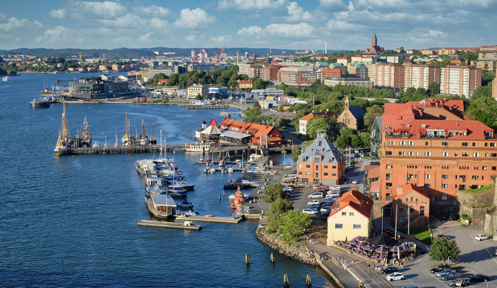

1. 스웨덴에 대하여
스웨덴은 북유럽 국가중 가장 크고 인구도 많은 나라이다. 역사적으로도 스칸디나비아 지역의 패자로 군림하는 등 전통적으로 북유럽을 주도하는 국가이다. 나라의 대부분이 깊은 호수와 깊은 숲으로 이루어져 있고 유명한 팝 음악 환경과 놀란만큼 현란함과 화려함으로 약동하는 대도시도 존재한다. 바이킹 정신과 유산을 자랑스럽게 여기는 나라이며 방문객에게도 친근하고 따뜻하게 대해주는 것으로 유명한 나라이다.
2. 스웨덴의 교통과 기후
14개의 섬에 걸쳐 펼쳐진 큰 나라와 수도 주변으로 사람들의 왕래가 잦기 때문에 교통 시스템이 잘 갖춰진 나라이다. 교통 관련 법도 잘 재정되어 있어서 도로 환경이 좋다고 소문난 국가이다. 스웨덴은 사계절이 뚜렷하고 연중 기온이 온화한 편이다. 멕시코 난류의 영향으로 동일 위도상의 나라보다 따뜻해 북유럽의 나라들과 비교해 또 다른 느낌과 영향을 받을 수 있다.
3. 스웨덴에서 방문해야 하는 장소들
1. 라플란드
이곳은 스웨덴에서 매우 특별한 곳이다. 라플란드는 여름에는 해가 지지 않고 계속해서 해가 떠 있는 진풍경을 볼 수 있는 곳이다. 9월부터는 오로라를 보기 위해 찾기도 한다. 라플란드에서는 야생동물을 쉽게 볼 수 있으며 하이킹과 카누같은 액티비티도 즐길 수 있다. 또한 원주민인 사미 부족이 거주하는 옛 문화와 자연의 숨결이 이어져오는 곳이다.
2. 아이스 호텔
아이스 호텔은 스웨덴 북부 지역에 위치하는 고급 호텔로 유럽에서 가장 유명한 얼음 호텔이다. 이 호텔의 가장 특별한 점은 바로 모든 것이 얼음으로 만들어져 있다는 것이다. 방은 물론이고 벽, 천장, 의자, 심지어는 침대와 이불!!! 까지 얼음으로 만들어져 있다. 방 온도는 영하 5도 정도로 따뜻함을 위해 슬리핑 백과 이불도 주어진다고 한다. 숙박 뿐만 아니라 다양한 액티비티도 제공하는데, 눈사람 만들기, 스노우모빌 등을 체험할 수 있고 매번 겨울마다 새롭게 만들어지기 때문에 매년 새로운 디자인을 감상할 수 있다.
3. 예테보리
예테보리는 스웨덴의 서쪽 해안에 위치한 도시로 두번째로 큰 도시이다. 세계적인 항구 도시이며 스웨덴 경제의 중심지이다. 다양한 문화와 역사를 품고 있는데, 리즈쇼피티라는 스웨덴에서 가장 큰 테마파크가 존재한다. 또한 미술관, 해양 박물관, 선착장 등 스웨덴만의 문화를 체험해 볼 수 있는 기회도 있다. 스웨덴에서 가장 유명한 축제인 '크리스마스 마켓' 등이 열리는 도시로 축제의 도시라고도 불린다.
4. 스웨덴의 먹거리
1. 수스트로밍
이 음식은 절대 여러분들을 골탕먹이려고 소개하는 것이 아니다. 이 음식은 세계 기내스북에 등재된 음식으로 삭힌 청어의 일종이다. 청어를 2달정도 발효시킨 것인데 하수구 냄새를 능가하는 냄새 때문에 실내에서 먹는 것이 금지되어..! 있을 정도다. 냄새가 너무 고약해 여름에 실외에 나와 옹기종기 수스트로밍을 먹는 사람들을 볼 수 있다. 샌드위치로도 먹고, 그냥 먹기도 한다. 냄새때문에 거부감을 표현하는 사람들도 비위만 좋아 일단 먹기에 성공하면 생각보다 맛있는 맛에 냄새를 참고 계속해서 먹는다고 한다.
2.그라브락스
이 요리는 스웨덴 사람들이 가장 많이 즐겨먹는 연어 요리이다. 소금과 설탕에 절인 연어를 서늘한 곳에 보관한 후 딜과 다양한 허브를 연어 위에 뿌려 얇게 썰어먹는 연어 슬라이스이다. 스웨덴 사람들은 크리스마스나 집에 좋은 일이 있을때 먹곤 했다고 한다. 회 같은데 회 같지 않은 이 처음 접해보는 음식에 점차 빠져들 것이다.
3. 링곤베리 잼과 미트볼

고기와 잼을 같이 먹는다고 ? 스웨덴 음식은 놀람의 연속이다.. 스웨덴 하면 미트볼을 떠올릴 정도로 스웨덴 사람들은 미트볼을 많이 먹는데 사실 미트볼 자체는 스웨덴 음식이 아니지만 이 링곤베리 잼을 활용해 재탄생시켰다. 브라운소스, 감자와 함께 곁들여 먹는 이 음식은 특별해보이지는 않지만 큰 행사가 있을때는 빠지지 않는 음식이다.